<title>Duo cerrado con LD1-B</title>
<meta name="claude:viewport-fit-sides" content="cover">
<link rel="stylesheet" href="https://fonts.googleapis.com/css2?family=Inter:wght@400;500;600&family=Space+Grotesk:wght@600;700&display=swap">
<style>
/* Tres decisiones, cada una con «Hoy» y sus opciones lado a lado en el tamaño de la pantalla de afuera del Duo (466 × 678). */
:root {
  --bg: #f2f4f3; --card: #ffffff; --fg: #14181a; --muted: #5a6468; --line: #dde3e2; --accent: #0b8a85; --pick: #0b8a85; --pick-bg: #e3f4f2;
  --display: "Space Grotesk", system-ui, sans-serif; --body: "Inter", system-ui, sans-serif;
}
@media (prefers-color-scheme: dark) { :root:not([data-theme="light"]) {
  --bg: #0e1213; --card: #171c1e; --fg: #e7eced; --muted: #9aa6aa; --line: #283033; --accent: #3cc6bf; --pick: #3cc6bf; --pick-bg: #12302e; color-scheme: dark } }
:root[data-theme="dark"] {
  --bg: #0e1213; --card: #171c1e; --fg: #e7eced; --muted: #9aa6aa; --line: #283033; --accent: #3cc6bf; --pick: #3cc6bf; --pick-bg: #12302e; color-scheme: dark }
body { background: var(--bg); color: var(--fg); font-family: var(--body); line-height: 1.5;
  padding-left: max(16px, env(safe-area-inset-left, 0px)); padding-right: max(16px, env(safe-area-inset-right, 0px)); padding-block: 28px 72px; }
main { max-width: 1120px; margin: 0 auto; display: grid; gap: 40px; }
h1 { font-family: var(--display); font-size: clamp(1.7rem, 4vw, 2.3rem); margin: 0; text-wrap: balance; }
h2 { font-family: var(--display); font-size: 1.35rem; margin: 0; text-wrap: balance; }
.intro { display: grid; gap: 10px; max-width: 66ch; }
.intro p, .lead { margin: 0; color: var(--muted); }
.done { background: var(--card); border: 1px solid var(--line); border-radius: 12px; padding: 14px 16px; max-width: 66ch; display: grid; gap: 4px; }
.done b { font-family: var(--display); color: var(--accent); }
.done p { margin: 0; }
section.decision { display: grid; gap: 14px; }
.dhead { display: flex; gap: 12px; align-items: baseline; flex-wrap: wrap; }
.code { font-family: var(--display); font-weight: 700; color: var(--accent); font-variant-numeric: tabular-nums; }
.options { display: grid; grid-template-columns: repeat(auto-fit, minmax(min(100%, 250px), 1fr)); gap: 16px; }
.opt { background: var(--card); border: 1px solid var(--line); border-radius: 14px; padding: 12px; display: grid; gap: 10px; align-content: start; min-width: 0; }
.opt.pick { border: 2px solid var(--pick); background: linear-gradient(var(--pick-bg), var(--card) 40%); }
.opt.today { opacity: .92; }
.opt header { display: flex; gap: 8px; align-items: baseline; flex-wrap: wrap; }
.opt h3 { margin: 0; font-size: 1rem; font-weight: 600; flex: 1; min-width: 0; }
.tag { font-size: .72rem; font-weight: 600; letter-spacing: .03em; color: var(--pick); border: 1px solid var(--pick); border-radius: 999px; padding: 1px 8px; }
.tag.grey { color: var(--muted); border-color: var(--line); }
.opt img { width: 100%; height: auto; border-radius: 12px; border: 1px solid var(--line); display: block; background: #000; }
.opt ul { margin: 0; padding-left: 18px; font-size: .88rem; display: grid; gap: 3px; }
.opt li::marker { color: var(--muted); }
.plus { color: var(--fg); } .minus { color: var(--muted); }
.why { margin: 0; font-size: .92rem; max-width: 70ch; }
.why b { color: var(--accent); }
.dictate { background: var(--card); border: 1px solid var(--line); border-radius: 12px; padding: 16px; display: grid; gap: 8px; max-width: 70ch; }
.dictate p { margin: 0; }
.dictate .say { font-family: var(--display); font-size: 1.25rem; font-weight: 700; color: var(--accent); }
.evidence { display: grid; grid-template-columns: repeat(auto-fit, minmax(min(100%, 150px), 1fr)); gap: 14px; }
.strip { background: var(--card); border: 1px solid var(--line); border-radius: 14px; padding: 10px; display: grid; gap: 8px; align-content: start; }
.strip img { width: 100%; height: auto; border-radius: 10px; border: 1px solid var(--line); display: block; }
.strip p { margin: 0; font-size: .84rem; }
.strip b { font-weight: 600; }
.map { overflow-x: auto; }
.map table { border-collapse: collapse; width: 100%; min-width: 560px; font-size: .9rem; background: var(--card); border: 1px solid var(--line); border-radius: 12px; overflow: hidden; }
.map th, .map td { text-align: left; padding: 10px 12px; border-bottom: 1px solid var(--line); vertical-align: top; }
.map th { font-family: var(--display); font-weight: 600; font-size: .85rem; color: var(--muted); }
.map tr:last-child td { border-bottom: 0; }
.map td:first-child { font-weight: 600; }
.sources { font-size: .84rem; color: var(--muted); display: flex; flex-wrap: wrap; gap: 4px 14px; }
.sources a { color: var(--accent); }
.moments { display: grid; grid-template-columns: repeat(auto-fit, minmax(min(100%, 230px), 1fr)); gap: 16px; }
.moment { background: var(--card); border: 1px solid var(--line); border-radius: 14px; padding: 12px; display: grid; gap: 8px; align-content: start; min-width: 0; }
.moment img { width: 100%; height: auto; border-radius: 12px; border: 1px solid var(--line); display: block; background: #000; }
.moment h3 { margin: 0; font-size: 1rem; font-weight: 600; }
.moment .rule { margin: 0; font-size: .9rem; }
.moment .state { font-size: .75rem; font-weight: 600; color: var(--muted); }
.moment .state.ok { color: var(--accent); }
.notes { font-size: .88rem; color: var(--muted); max-width: 70ch; display: grid; gap: 6px; }
.notes p { margin: 0; }

.say { font-family: var(--display); font-size: 1.25rem; font-weight: 700; color: var(--accent); margin: 0; }
.note { font-size: .85rem; color: var(--muted); margin: 0; border-left: 3px solid var(--line); padding-left: 10px; }
.pair { display: grid; grid-template-columns: 1fr 1fr; gap: 8px; }
.pair figure { margin: 0; display: grid; gap: 4px; }
.pair figcaption { font-size: .8rem; color: var(--muted); }

.screens { display: grid; grid-template-columns: repeat(auto-fit, minmax(min(100%, 420px), 1fr)); gap: 16px; }
</style>
<main>
  <div class="intro">
    <h1>Duo cerrado con LD1-B · DK-B</h1>
    <p>Lo que elegiste: la hora arriba, las pestañas abajo, y la barra que se encoge a un botón cuando bajas. Así se verían las demás pantallas principales. Las de «en reposo» son capturas reales del Duo con las barras arriba y abajo. Las de «al bajar» son maquetas: el botón y el difuminado los dibujé yo.</p>
    <p>Lo bueno: casi todas las pantallas ya juntan solas el título y la hora en un renglón, sin construir nada aparte. El renglón único de Inicio sí hay que construirlo.</p>
  </div>
  <section class="screens"><article class="opt"><header><span class="code">S1</span><h3>Inicio</h3></header><div class="pair"><figure><figcaption>En reposo.</figcaption></figure><figure><figcaption>Al bajar: la barra se encoge a un botón.</figcaption></figure></div><ul><li class="plus">Un solo renglón arriba: logo, mosaico, control, la hora y tu foto (maqueta).</li></ul></article><article class="opt"><header><span class="code">S2</span><h3>Explorar</h3></header><div class="pair"><figure>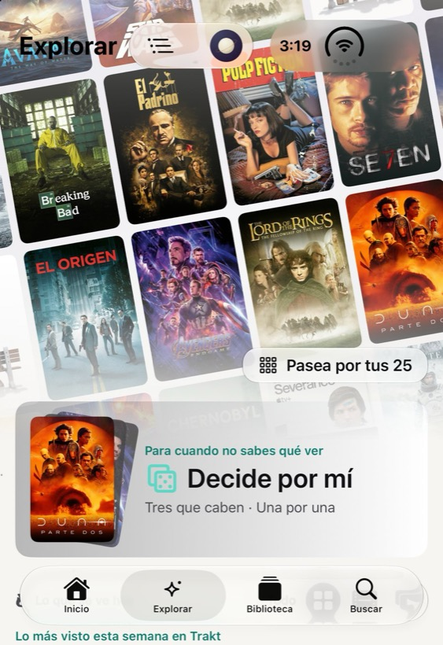<figcaption>En reposo.</figcaption></figure><figure>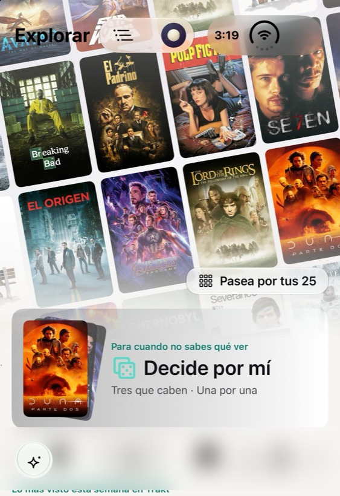<figcaption>Al bajar: la barra se encoge a un botón.</figcaption></figure></div><ul><li class="plus">El título y la hora ya comparten renglón: así lo acomoda iOS.</li><li class="minus">Ese renglón queda apretado: «Explorar», la lista, tu foto y la hora. Lo pulo para que respire.</li></ul></article><article class="opt"><header><span class="code">S3</span><h3>Buscar</h3></header><div class="pair"><figure>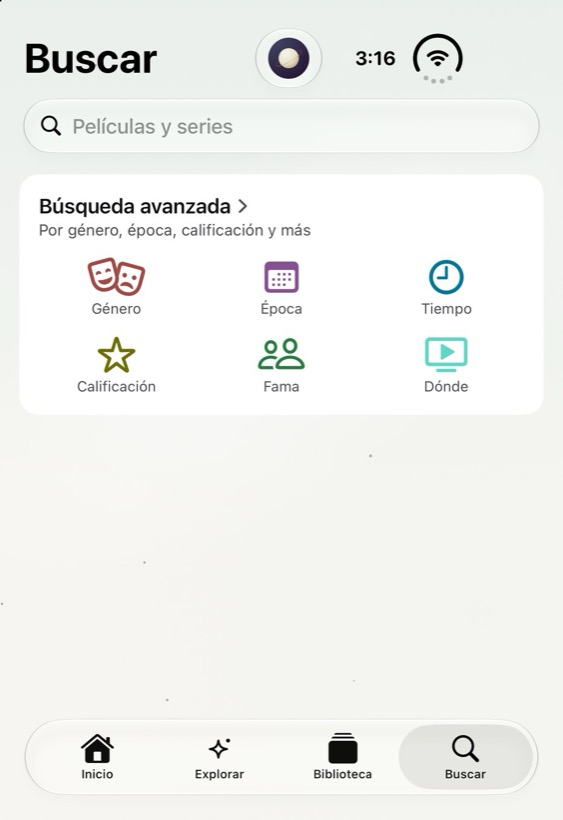<figcaption>En reposo.</figcaption></figure><figure>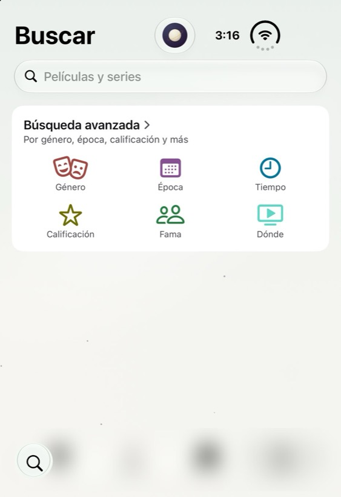<figcaption>Al bajar: la barra se encoge a un botón.</figcaption></figure></div><ul><li class="plus">Título, tu foto y la hora en un renglón.</li><li class="minus">Abajo queda vacío hasta que buscas. Eso no lo cambia LD1: es una decisión aparte.</li></ul></article><article class="opt"><header><span class="code">S4</span><h3>Biblioteca</h3></header><div class="pair"><figure>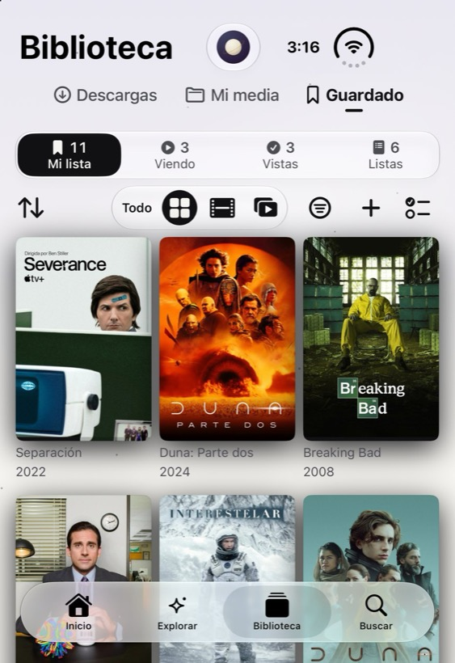<figcaption>En reposo.</figcaption></figure><figure>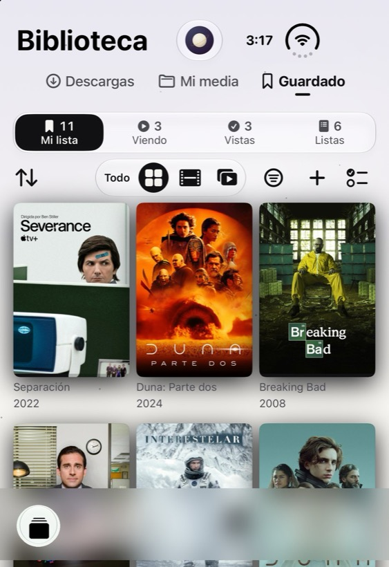<figcaption>Al bajar: la barra se encoge a un botón.</figcaption></figure></div><ul><li class="plus">Título y hora en un renglón. Al bajar, la última fila de pósters ya no queda bajo la barra.</li></ul></article><article class="opt"><header><span class="code">S5</span><h3>Ficha (Duna)</h3></header><div class="pair"><figure>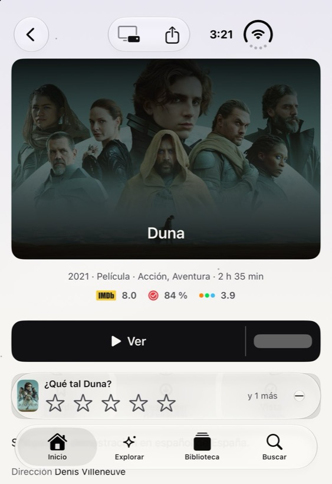<figcaption>En reposo.</figcaption></figure><figure>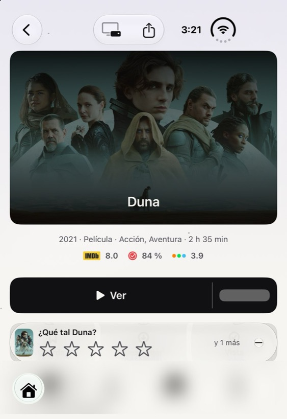<figcaption>Al bajar: el botón es el de Inicio, porque la ficha se abrió desde ahí.</figcaption></figure></div><ul><li class="plus">Volver, mandar a la TV, compartir y la hora, todo arriba en un renglón.</li><li class="minus">El rectángulo gris junto a «Ver» es la versión mientras se busca: llega sola en unos segundos («🇲🇽 1080p ⌄»). Lo comprobé y no es un error.</li></ul></article><article class="opt"><header><span class="code">S6</span><h3>Ajustes</h3></header><div class="pair"><figure>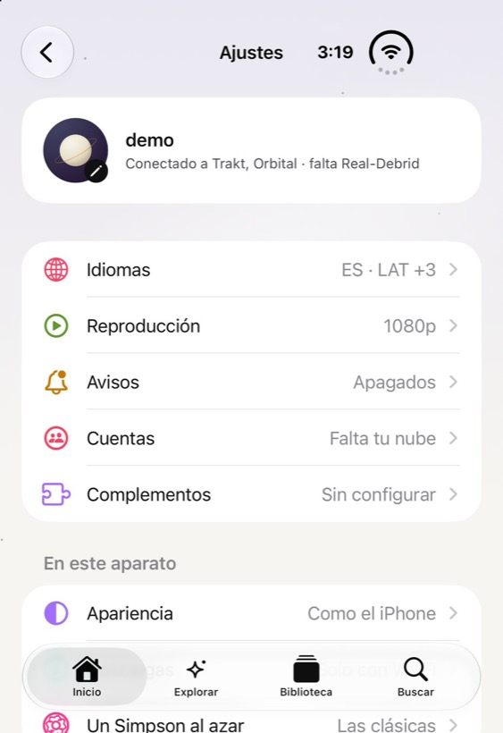<figcaption>En reposo.</figcaption></figure><figure>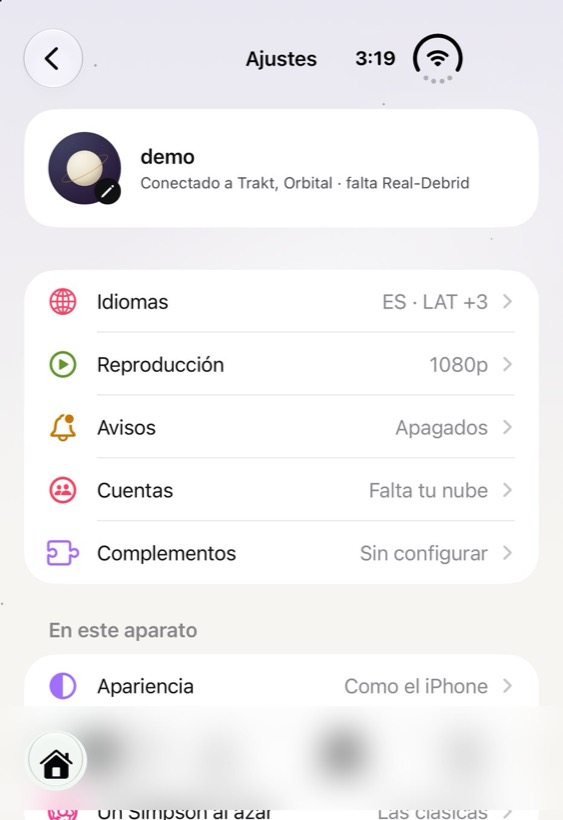<figcaption>Al bajar: la barra se encoge a un botón.</figcaption></figure></div><ul><li class="plus">Volver, «Ajustes» y la hora en un renglón.</li></ul></article><article class="opt"><header><span class="code">S7</span><h3>Reproductor</h3></header><div class="pair"><figure>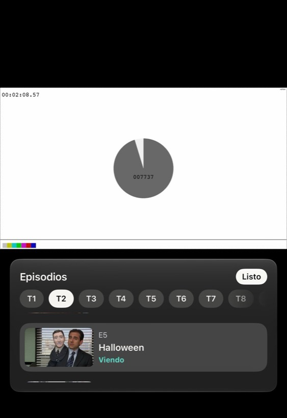<figcaption>En reposo.</figcaption></figure></div><ul><li class="plus">No lleva barra de pestañas: el video usa todo el ancho.</li><li class="minus">En vertical quedan franjas negras arriba y abajo, porque el video es más ancho que la pantalla. Eso pasa en cualquier iPhone.</li></ul></article></section>
  <div class="done"><b>Lo que sigue</b><p>Si te late cómo se ven, lo construyo: las barras arriba y abajo en el Duo, el renglón único de Inicio y la barra que se encoge. Luego pulo el renglón de Explorar. Lo pruebo en el Duo y en tu 17 Pro.</p><p>Para ver la barra encogerse de verdad necesito el permiso del simulador «Orbital QA Duo».</p></div>
</main>
